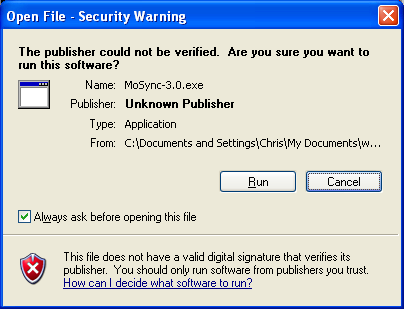
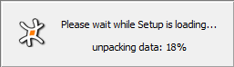
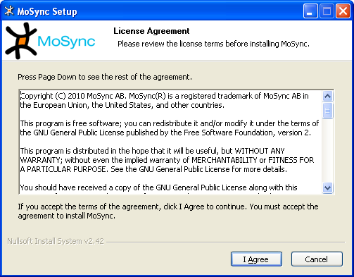
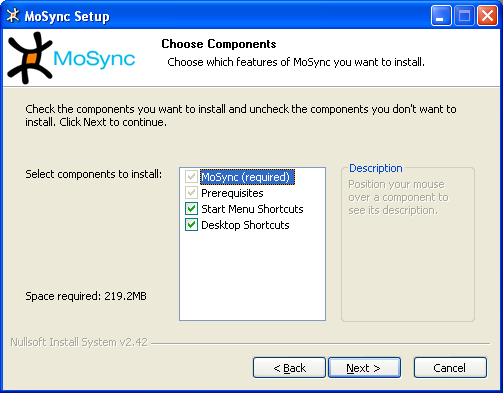
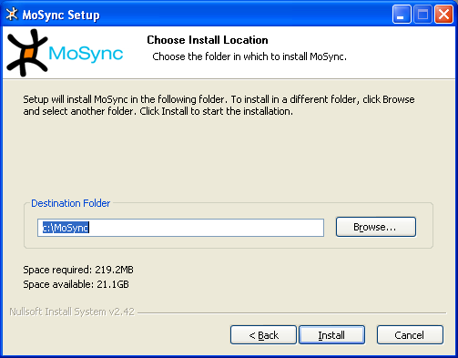
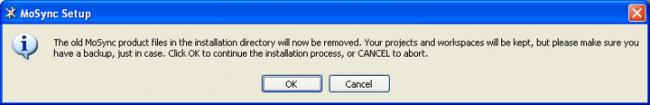
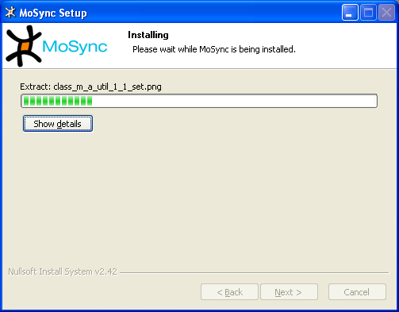

In this guide we describe the system requirements of the MoSync® SDK for Windows, and how to download and install it. We also describe how to upgrade from a previous release of the MoSync SDK for Windows.
You can download the latest recommended release of the MoSync SDK for Windows (and also source tarballs, latest nightly builds, and other MoSync products) from the Download page: http://www.mosync.com/download.
The MoSync SDK for Windows lets you to directly build device-ready application packages for Android, Java ME, Symbian, Windows Mobile, Smartphone, Pocket PC, and Moblin/Meego devices. For an overview of the features supported on each platform, see Feature/Platform Support.
If you also install the Windows Phone SDK, the MoSync SDK for Windows lets you build device-ready application packages for Windows Phone. If you do not install the Windows Phone SDK, the MoSync SDK will just create a Visual Studio Windows Phone 2010 project and you will need to use Visual Studio for the final packaging.
You can also use the MoSync SDK for Windows to build Xcode projects for iOS applications (i.e., for iPhone, iPad, and iPod Touch). However, to finalize an Xcode project you will need to transfer it to an Apple Mac running OS X and Xcode and create the application package there. If you already have a Mac available, we recommend that you download and install our OS X development environment, the MoSync SDK for OS X, which is also available from our Download page.
The MoSync SDK for Windows is designed to run on any PC that meets the following requirements:
Install or update your Java SE Runtime Environment before installing MoSync. It can be downloaded here.
Note: we recommend the Oracle/Sun version of JRE. If you wish to use another vendor's JRE and you have set the permanent memory perm gen size to less than the default size of 82Mb, you will get warning message requesting that you increase it.
To use MoSync's device discovery and transfer features, you will also need a Bluetooth-enabled PC, a mobile device and one of the following software stacks:
To use the emulator's Bluetooth support when testing programs, you will need the Microsoft stack.
After you have downloaded the MoSync SDK installer package, double-click the file to begin the installation.If the following message is shown, just click Run:

The installer will unpack the files and begin the installation process.

When the files have been unpacked, the MoSync License Agreement will appear — it contains important information about the terms under which we supply the MoSync SDK. Agree to it if you would like to proceed with the installation.

Select the components you wish to install. Note that there isn't any options for the MoSync package, everything needs to be installed.

Select where you would like MoSync to be installed. Please note that MoSync needs to be installed to a directory which is not containing any spaces in its path.

If you have a previously uninstalled copy of MoSync you will get the following notice. Please follow the instruction and make a copy of your project files if they are inside the MoSync installation folder. Even if they shouldn't be removed it's better to be safe than sorry.

If you had a previous installation it will first be removed before the new version of the MoSync SDK is installed on your computer. Please wait for the installation to complete. The installation process may take a few minutes.

As part of the installation process, the Microsoft Visual C++ 2005 Redistributable will also be installed and some changes will be made to environment variables.
When the MoSync SDK installation process is completed, click Close.
To start the MoSync SDK, click the shortcut icon on your Windows desktop:
See Launching and Registering MoSync SDK for an exciting description of what happens next!
MoSync includes its own powerful, cross-platform emulator, MoRE. You can also install native emulators -- particularly useful for testing native user interfaces like our Widget API and NativeUI Library, and for testing APIs and libraries that are only currently supported on a limited number of platforms. Instructions for installing native emulators can be found in our user guide Emulating a Device.